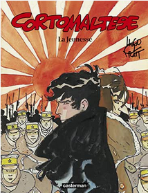

La Jeunesse de Corto Maltese est d'abord paru dans Le matin de Paris de 1981 à 1982, puis sera édité en album couleur en 1983. Cet album raconte une partie de la jeunesse de Corto Maltese, et de ses premières rencontres avec des personnages qui reviendront dans le futur.
L'histoire se déroule fin 1905, à Moukden, en Mandchourie, au moment de la fin de la guerre russo-japonaise. Corto Maltese, alors âgé de 17 ans, côtoie le correspondant de guerre et écrivain Jack London, du San Francisco Examiner. Il n'est pas à proprement parler de personnage principal de l'histoire, et apparaît rarement: les points de vue principaux sont ceux de London et de Raspoutine, soldat russe ayant déserté après avoir tué un Japonais et son officier malgré le cessez-le-feu, et que Corto va rencontrer lors de cette histoire. Le russe, voulant fuir la Mandchourie, sauve London d'un duel perdu d'avance qu'il a engagé contre un officier japonais qu'il a insulté, et rencontre Corrto à la fin de l'album qui ne sera jamais achevé, ne faisant que 44 pages.
